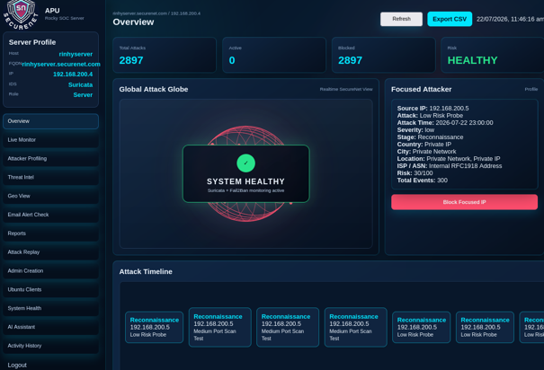
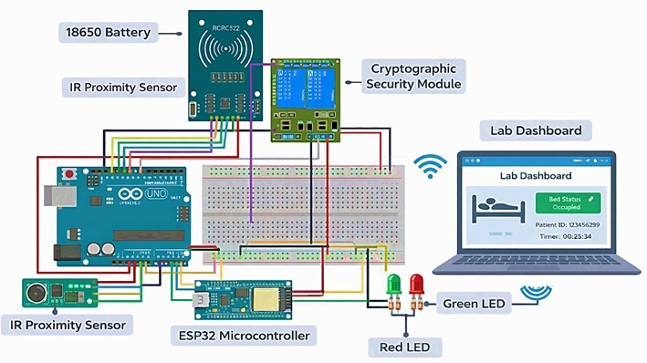
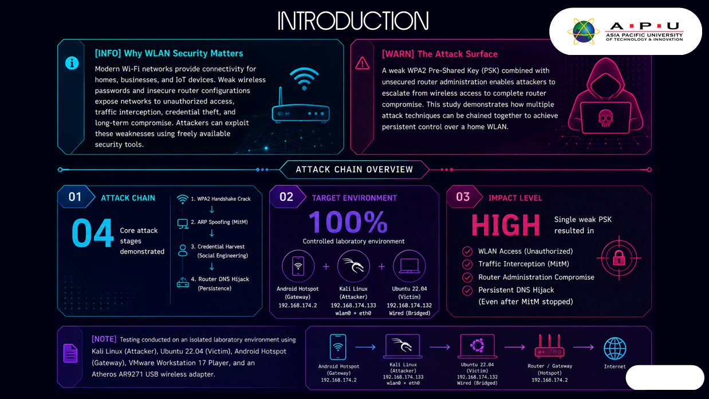
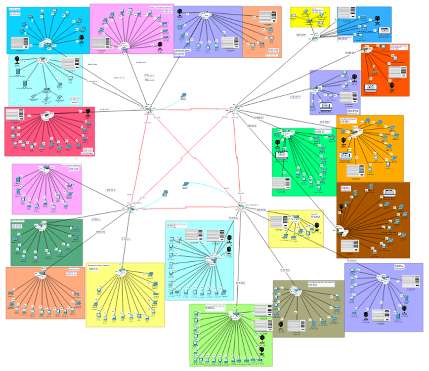
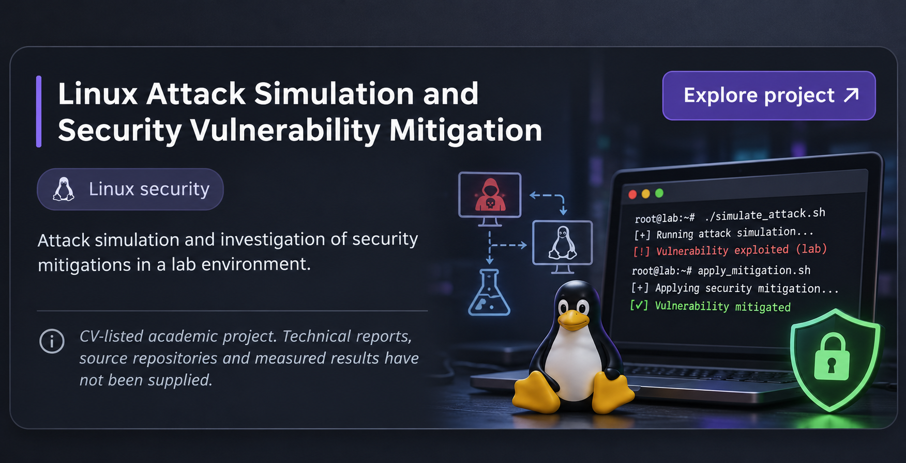
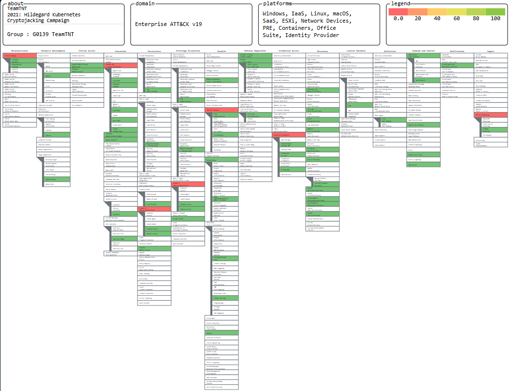
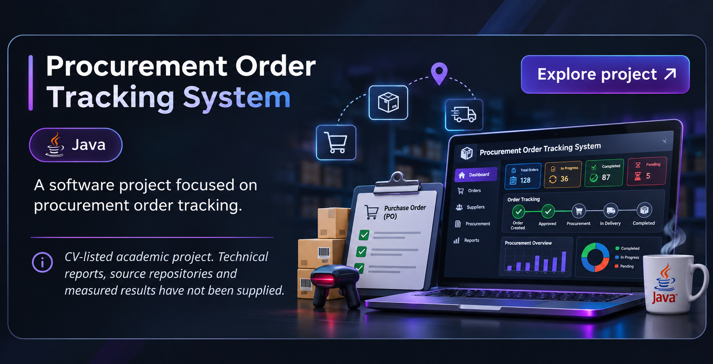
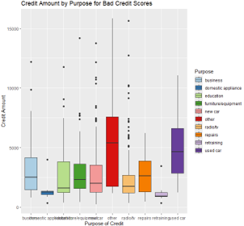
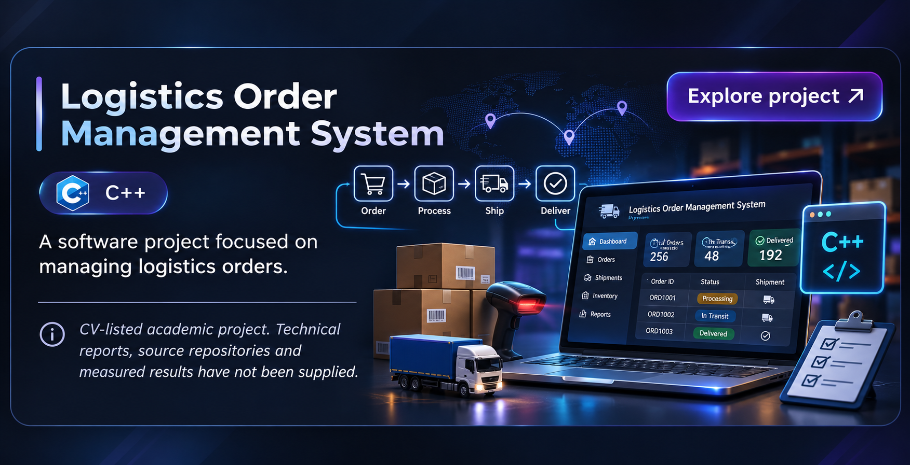
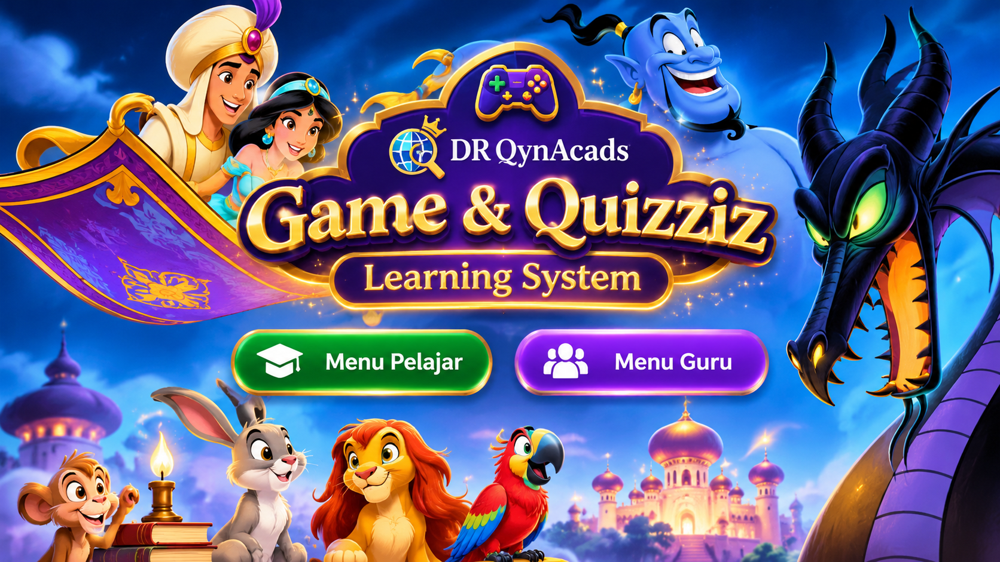

LINUX / NETWORKING / CYBER DEFENCE / TECHNOLOGY / PROGRAMMING
Dharinhy Jeevan.
Founder & Lead of DR QYNACADS TECHNOLOGY & LEARNING ENTERPRISE. A Computer Science (Cybersecurity) graduate bringing practical experience in Linux, network administration, technical support and secure systems.
An enthusiastic Computer Science (Cyber Security) graduate with practical experience in Technical Support, Systems and Network Administration, Linux, Email Security, Cloud services, and Cyber Security projects. A hard-working and flexible individual with good problem-solving and communication skills and ready to provide technical knowledge to the organisation.
02 /
DR QYNACADS.
DR QYNACADS LOGO
PROFESSIONAL PRACTICE
DR QYNACADS TECHNOLOGY & LEARNING ENTERPRISE
Dharinhy Jeevan · Founder & Lead
Our objective
To connect technology with practical learning, helping people build digital confidence, develop useful technical skills and approach technology with greater security awareness.
Make technical knowledge clearer and more approachable.
Encourage practical problem-solving and responsible use of technology.
Turn learning into skills that support real-world goals.
Here is the website. Click the button to visit.
03 /
Experience in the field.
Jan 2026 — Present
Lab Assistant for System and Network Administration & Networking
Asia Pacific University of Innovation and Technology · Kuala Lumpur
Set up and maintained systems, servers and network laboratory environments.
Assisted students with practical tasks involving Linux servers, networking and security configurations.
Troubleshot system and network issues during laboratory sessions.
Supported practical learning by providing technical guidance and hands-on assistance.
Helped maintain an organised and efficient laboratory environment.
Feb 2025 — July 2025
Technical Support Engineer (Intern)
Westcon Solutions · Petaling Jaya, Selangor
Provided technical support for email security and cloud-based services.
Diagnosed and resolved system, email and customer-reported technical issues.
Assisted clients with system configuration and incident resolution.
Supported the reliable operation of secure email environments.
Delivered clear and professional customer support throughout the troubleshooting process.
July 2025 — Nov 2025
Peer Leader for System and Network Administration
Asia Pacific University of Innovation and Technology · Kuala Lumpur
Guided students through system and network administration laboratory activities.
Supported hands-on learning in Linux configuration and networking fundamentals.
Assisted students in diagnosing and resolving system and network issues.
Explained technical concepts and encouraged collaborative problem-solving.
04 /
Project portfolio.
Academic projects across defence, infrastructure, IoT and software. Open a project to explore its focus.

PROJECT 01 / VISUAL PREVIEW
PROJECT / 01
The Secure Office Network with Real-Time Attack Detection and Email-Based Alerting
Rocky Linux Server · Ubuntu Linux
Explore project ↗
Network defence and email-based alerting in a Linux office environment.
This project explores how network infrastructure, Linux administration and security monitoring work together to protect an office environment. Its focus includes identifying suspicious activity, supporting timely investigation and communicating potential threats through email-based alerts. Rocky Linux Server and Ubuntu Linux provide the foundation for exploring secure system configuration and network defence.

PROJECT 02 / VISUAL PREVIEW
PROJECT / 02
IoT Smart Hospital Bed Monitoring for Precarious Patients
Arduino
Explore project ↗
IoT monitoring applied to hospital beds and patient observation.
This Arduino-based project explores the application of connected monitoring technology to hospital beds for patients requiring close observation. It brings together embedded programming, sensor-based monitoring and the interpretation of changing conditions. The project highlights the importance of reliable readings, clear notifications and careful consideration of the limitations of a monitoring prototype.

PROJECT 03 / VISUAL PREVIEW
PROJECT / 03
Exploiting WLAN Vulnerabilities Through a MultiStage Attack Chain
Wireless security
Explore project ↗
A study of wireless vulnerabilities and connected attack stages in an authorised lab.
This project examines how weaknesses in wireless networks can connect across multiple stages of an attack. Its focus is on understanding the relationship between wireless configuration, access controls and potential exposure within an authorised testing environment. Studying the attack chain also provides a basis for identifying defensive controls that can interrupt an attacker’s progression.

PROJECT 04 / VISUAL PREVIEW
PROJECT / 04
Network Design and Configuration
Cisco Packet Tracer
Explore project ↗
Network topology design and configuration using simulation.
Developed around Cisco Packet Tracer, this project explores the planning and configuration of a connected network environment. It connects network topology, addressing, switching and routing concepts with practical configuration decisions. The emphasis is on understanding how individual devices work together and how structured troubleshooting supports dependable communication.

PROJECT 05 / VISUAL PREVIEW
PROJECT / 05
Linux Attack Simulation and Security Vulnerability Mitigation
Linux security
Explore project ↗
Attack simulation and investigation of security mitigations in a lab environment.
This project explores the relationship between Linux system weaknesses, simulated attacks and defensive configuration. Its focus includes understanding how vulnerabilities arise, examining their potential impact and considering appropriate mitigation measures. The work connects system administration with security analysis, emphasising verification and responsible testing within a controlled environment.

PROJECT 06 / VISUAL PREVIEW
PROJECT / 06
MITRE ATT&CK Framework
Threat modelling
Explore project ↗
Exploration of adversary tactics and techniques through the ATT&CK framework.
This project explores the MITRE ATT&CK framework as a structured way to understand adversary behaviour. It examines the distinction between an attacker’s objectives and the techniques used to pursue them. This approach helps connect security observations with a shared vocabulary for threat analysis, detection planning and communication of defensive priorities.

PROJECT 07 / VISUAL PREVIEW
PROJECT / 07
Procurement Order Tracking System
Java
Explore project ↗
A software project focused on procurement order tracking.
This Java project focuses on organising procurement information and following orders through a business workflow. It connects programming concepts with the practical need to maintain clear, consistent and accessible order records. The project provides a setting for exploring application structure, information handling and the role of software in reducing administrative complexity.

PROJECT 08 / VISUAL PREVIEW
PROJECT / 08
Credit Risk Classification
RStudio
Explore project ↗
A data analysis project exploring credit risk classification.
This RStudio project explores how data analysis can support the classification of credit risk. Its focus is on understanding relevant data, examining patterns and interpreting classification outcomes. The project connects analytical techniques with the importance of data quality, appropriate evaluation and careful communication of the limitations of a predictive result.

PROJECT 09 / VISUAL PREVIEW
PROJECT / 09
Logistics Order Management System
C++
Explore project ↗
A software project focused on managing logistics orders.
This C++ project focuses on organising logistics orders and representing operational information through software. It connects programming logic and structured data handling with the practical challenges of managing order records. The project emphasises a clear application flow and the importance of maintaining consistent information throughout an order-management process.

PROJECT 10 / VISUAL PREVIEW
PROJECT / 10
Game and Quiz System
SQL · HTML
Explore project ↗
A web and database project for games and quizzes.
This project combines HTML and SQL to explore the relationship between an interactive web interface and structured information storage. Its focus includes presenting game or quiz content clearly and organising the data that supports the experience. The project connects web development and database concepts with usability, logical content organisation and engaging user interaction.
05 /
The technical arsenal.
Cybersecurity +
Penetration Testing
Vulnerability Assessment
Network Scanning and Enumeration
Network Forensics
Digital Imaging and Acquisition
SSL/TLS
Exploitation Techniques
Linux System Security
Network Security
Email Security
Real-Time Attack Detection
Tools & frameworks +
Kali Linux
Nmap
Security Onion
Vulnerability-Scanning Tools
MITRE ATT&CK Framework
Databases & development +
MariaDB
phpMyAdmin
RStudio
Arduino
Networking +
Network Fundamentals
Switching
Routing
Wireless Networking
Network Design and Configuration
Cisco Packet Tracer
CCNA Fundamentals
Operating systems & servers +
Rocky Linux
Ubuntu Server
Windows
Kali Linux
Linux Server Configuration
Programming +
Python
Java
JavaScript
C
C++
C#
SQL
Assembly Language
Ruby
Scratch
Virtualisation & cloud +
Oracle VM VirtualBox
Virtualized Lab Environments
Cloud-Service Support
Web technologies +
HTML
CSS
JavaScript
06 /
Built on strong foundations.
Sept 2023 — August 2026
BSc (Honours) Computer Science (Cybersecurity)
Asia Pacific University of Technology and Innovation, Kuala Lumpur
Major in Cybersecurity · Student Ambassador · CTF & PicoCTF Certified
May 2022 — August 2023
Certified Foundation in Information Technology
INTI International University, Nilai, N.S.
26th INTIMA Student Government: Head of Departments & Event Host
Jan 2017 — April 2022
Sijil Pelajaran Malaysia (SPM)
Sekolah Menengah Kebangsaan Puteri, Seremban, N.S.
Major in Computer Science · School Prefectorial Board · State Level ASMO Maths Olympiad · Certification for Malaysia Book of Records
07 /
Professional credentials.
CREDENTIALS / CERTIFICATIONS
Certifications & badges
AI Concepts for Developers and Technology Professionals
Red Hat Academy
CCNA: Introduction to Networks
CCNA: Switching, Routing, and Wireless Essentials
Introduction to the Threat Landscape 3.0
Getting Started in Cybersecurity 3.0
ASMO Maths Olympiad
Languages
English — Proficiency Malay — Proficiency Tamil — Intermediate Chinese — Beginner
Core strengths
Team Leadership and Collaboration · Cross-Cultural Communication · Analytical Problem Solving · Adaptability and Continuous Learning · Project and Time Management
08 /
Final Year Project. In action.
Explore the portal, then watch the project explanation and demonstration.
Portal preview
The portal screenshot will appear here when added.
Final Year Project portal
Explanation & demonstration
Press play to watch the demonstration. The video loads only when requested.